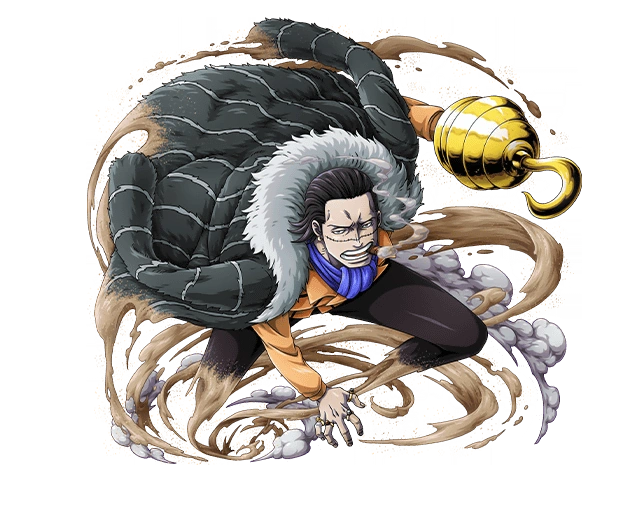
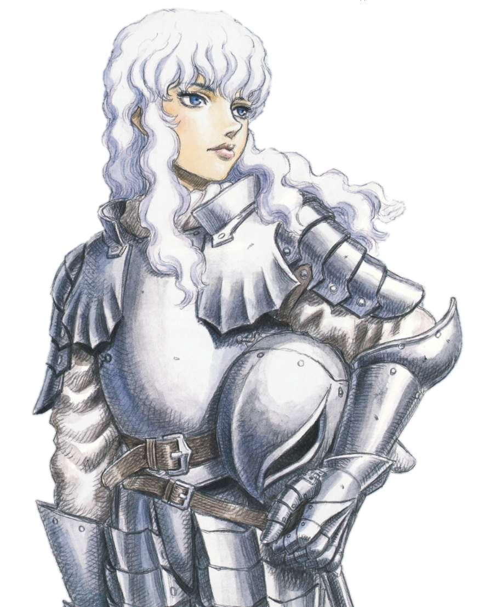
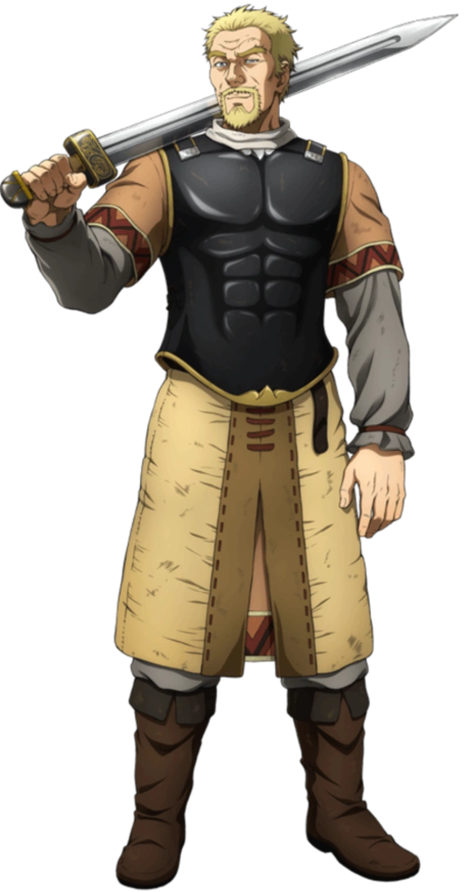

Crocodile
Anime: One PieceBirthday:: September 5th
Age: 44
"Desert King" Sir Crocodile is the former president of the mysterious crime syndicate Baroque Works, formerly operating under the codename "Mr. 0", with Nico Robin, formerly known as "Miss All Sunday", operating as his Vice-President and partner. He is the main antagonist of the Arabasta Arc and the Arabasta Saga overall, and a supporting character in the Impel Down Arc and the Marineford Arc. He is one of the longest running and most noteworthy primary adversaries of the series, as he was the first enemy to hand Luffy a complete and utter defeat. He was originally introduced as one of the Seven Warlords of the Sea, but he was later stripped of his title after a failed attempt to take control of Arabasta Kingdom and was imprisoned the legendary prison Impel Down; being placed in Level 6.

Griffith
Anime: BerserkBirthday:: Unknown
Age: 24-25
Griffith is the current leader of the reborn Band of the Falcon and supreme commander of the Midland Regular Army. Having been at the fore of many battles, he has amassed a reputation as a savior across the continent, and is revered as the "Falcon of Light". As the leader of the original Band of the Falcon, he and his mercenaries are able to end the Hundred-Year War and bring peace to the war-torn kingdom of Midland. Following the desertion of his most trusted confidant Guts, Griffith beds Princess Charlotte on impulse, bringing about his imprisonment, year-long crippling torture, and the seeming demise of his dream. Though he is eventually rescued by the band, his state of extreme invalidity and undying desire to obtain his own kingdom compel him to sacrifice his comrades during the fifth Eclipse, for kinsmanship with the God Hand as their fifth member Femto - a demonic, idealized version of himself stripped of his human inhibitions. In time, he is incarnated into the Physical World, concerned solely with the realization of his dream, which comes to pass with his thwarting of the Kushan invasion of Midland, the Great Roar of the Astral World he prompts, and the rise of his utopian capital city, Falconia.

Askeladd
Anime: Vinland SagaBirthday: -969
Age: 44
Askeladd, whose real name is Lucius Artorius Castus, was a Welsh-Danish Viking who commanded a mercenary band of Vikings, which Thorfinn followed for over a decade. He was a major antagonist of the War Arc, due to Thorfinn’s goals. Askeladd claimed he was a descendant of the legendary warrior Lucius Artorius Castus through his mother’s side. The latter idolized Artorius's story and named her son after him. The nickname "Askeladd” came from "Ashen Lad," as he was constantly covered in ash from various jobs as a child. He was contracted by Floki to assassinate Thors and was afterwards followed for over a decade by a vengeful Thorfinn, who wished to kill his father's killer honourably and begrudginly performed jobs for Askeladd's band in order to earn duels with him. After a majority of his band was wiped out by Thorkell, Askeladd pledged his service to Canute to achieve his secret goal of keeping Wales safe from Viking invasions.